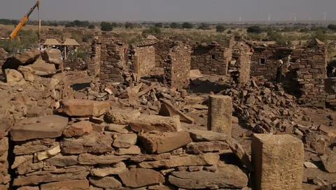
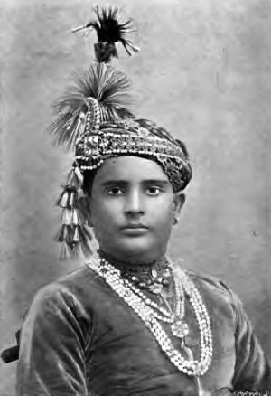

The first time I came across Kuldhara, I wasn't simply looking at the ruins of an abandoned village. I was looking at the remains of a place that once had life, families, homes, temples and narrow streets filled with people. Today, Kuldhara lies about 17 kilometres west of Jaisalmer, surrounded by the dry landscape of Rajasthan. According to Rajasthan Tourism, the village was established around 1291 by Paliwal Brahmins and eventually became a prosperous settlement. But somewhere in the early nineteenth century, Kuldhara was abandoned—and that is where its mystery begins. The most famous story surrounding the village involves Salim Singh, the powerful Diwan of Jaisalmer. According to local legend, he wanted to marry the daughter of Kuldhara's village head. When the villagers refused to surrender to his demands, they were allegedly threatened with severe consequences. The story says that the people of Kuldhara, along with residents of many neighbouring Paliwal settlements, decided to leave rather than submit. Before disappearing, they are said to have cursed the land, declaring that nobody would ever be able to settle there again. Standing among the empty houses today, I can understand why this story became so powerful. Doorways remain open to rooms that have been empty for generations. Ancient walls stand silently beneath the desert sky, and the narrow lanes seem to lead nowhere. At night, local folklore claims that strange sounds and supernatural occurrences have been experienced around the ruins. These stories have given Kuldhara its reputation as one of India's most mysterious abandoned places. But there is another side to the mystery. Historical evidence suggests that the village may not have been abandoned in a single dramatic night. Water scarcity appears to have become a serious problem, with many wells drying up, while other researchers have proposed environmental and earthquake-related explanations for the destruction of Kuldhara and nearby settlements. So when I look at Kuldhara, I don't see only a haunted village. I see a historical mystery wrapped in centuries of folklore. Maybe the curse is real. Maybe it isn't. But after two centuries, one fact remains impossible to ignore: Kuldhara was abandoned, and the reason why still leaves room for questions.

As I continued walking through Kuldhara, the story began to feel even stranger. The ruins did not look like a place that had simply been forgotten; they looked as though life had suddenly stopped and never returned. I imagined families leaving their homes behind, carrying whatever they could while the desert slowly swallowed the village. What fascinated me most was the legend that the Paliwal Brahmins supposedly placed a curse on Kuldhara before leaving, declaring that no one would ever successfully settle there again. Whether that curse was actually spoken or became part of the story much later, it has become inseparable from Kuldhara's identity. Even today, stories circulate about visitors feeling uncomfortable, hearing unexplained sounds, or sensing that they are being watched while exploring the ruins. None of these supernatural claims has been scientifically established, but standing among hundreds of years old walls makes it easy to understand why such stories developed. As the sunlight disappears over the Thar Desert, the abandoned houses become silhouettes against the darkening sky, and the narrow lanes become almost completely silent. That is when Kuldhara feels less like an archaeological site and more like a place frozen between history and legend. I kept wondering what happened to the people who left—and whether they ever looked back at the homes they had built. Perhaps that is what makes Kuldhara so haunting. It isn't simply the idea of ghosts. It is the thought of an entire community disappearing from a place that was once their home, leaving behind only empty buildings, unanswered questions, and a legend that refuses to disappear. And as I walked away from Kuldhara, one thought stayed with me: **sometimes, the most frightening places aren't the ones where we know what happened—they're the ones where we never truly found out.
When I began researching Kuldhara, I discovered that its haunting reputation did not begin with ghosts—it began with a story of fear, power and an entire community abandoning its home. According to the most famous legend, Kuldhara was once a prosperous village inhabited by the Paliwal Brahmins. Everything changed when Salim Singh, the powerful Diwan of Jaisalmer, allegedly became determined to marry the daughter of Kuldhara's village chief. When the villagers refused to accept his demand, he reportedly threatened them with severe consequences. Rather than surrender the girl or live under his control, the village leaders are said to have made a decision that would change Kuldhara forever. According to the legend, the people of Kuldhara and surrounding Paliwal settlements left their homes during the night, abandoning the village and disappearing into the darkness. Before leaving, however, the villagers were said to have placed a curse upon Kuldhara: no one would ever be able to settle there again. What happened after that is where history slowly turns into folklore. The village remained deserted, and its houses, temples and narrow streets were gradually left to the desert. Over time, people began associating the abandoned settlement with supernatural stories. Local accounts have claimed that strange voices, shadows, whispers, unusual temperature changes and unexplained footprints could be experienced around the ruins after sunset. These reports have never established that Kuldhara is genuinely haunted, but they helped transform the abandoned village into one of Rajasthan's most famous “ghost villages.” As I imagine walking through Kuldhara today, the legend becomes easy to understand. There are no families living behind those old walls, no ordinary sounds of village life and no lights filling the deserted streets. There is simply silence, broken walls and the feeling of a place that was left behind centuries ago. Perhaps the curse was never real. Perhaps the haunting stories grew naturally from the mystery surrounding the abandonment. But that is exactly what makes Kuldhara so unsettling to me: **the village did not need a ghost story to become frightening—the unanswered story of the people who left was enough.**

* The entire village was abandoned: Kuldhara was once a thriving Paliwal Brahmin settlement, but by the early 19th century it had been deserted. Today, its abandoned streets and ruined houses are all that remain of the community that once lived there. * The famous curse of Kuldhara: According to local legend, the villagers cursed Kuldhara before leaving, declaring that nobody would ever be able to settle there again. Although the curse has never been proven, it became one of the main reasons behind the village's haunted reputation. * The mysterious disappearance: One popular version of the legend claims that the residents left Kuldhara during the night after facing threats from Salim Singh, the powerful Diwan of Jaisalmer. The story says that the villagers disappeared into the desert, leaving their homes behind. * A village frozen in time: Kuldhara still contains old houses, temples, walls and narrow streets. What makes the ruins unsettling is that these were once ordinary places filled with families and everyday village life. * Strange experiences are part of the folklore: Visitors and local stories have described hearing unexplained footsteps, whispers and strange sounds around the ruins. Some have even claimed to feel as though they were being watched. These accounts remain unverified. * The silence of the Thar Desert: After sunset, Kuldhara becomes extremely quiet. Wind passing through abandoned buildings can create strange sounds, making the atmosphere feel even more mysterious and adding to the supernatural stories surrounding the village. * The real mystery may not be supernatural: Researchers have suggested practical explanations for Kuldhara's abandonment, including water shortages and environmental changes. The exact combination of reasons behind the village's decline remains uncertain. * The legend became part of Kuldhara itself: Over generations, stories about the curse, mysterious experiences and supernatural activity transformed Kuldhara from an abandoned settlement into one of Rajasthan's most famous haunted locations. Perhaps Kuldhara isn't frightening because we know what happened there. Perhaps it's frightening because, centuries later, we're still trying to understand why everyone left.
As I finally reached the end of my journey through Kuldhara, I realized that the village's true mystery isn't simply whether it is haunted. It is the unanswered question of what really happened to the people who once called this place home. The abandoned houses, silent streets and crumbling temples tell the story of a community that disappeared from its old settlement, while the legend of Salim Singh and the curse has transformed that history into something far more chilling. Maybe the strange sounds and supernatural experiences reported around Kuldhara have ordinary explanations, or maybe there are stories that history has never been able to explain. I cannot say for certain. But standing among those deserted ruins, it is impossible not to feel that the village carries the weight of everything that happened there. Kuldhara may never reveal all of its secrets, and perhaps that is exactly why its legend has survived for so long. **The people may have left Kuldhara centuries ago, but the mystery they left behind never truly did.**